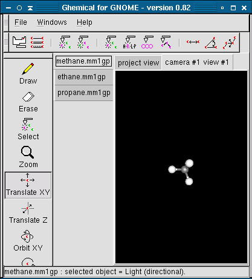
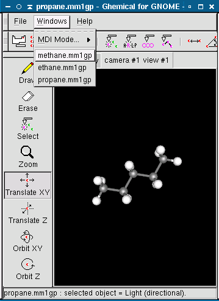

Ghemical can have more than one project (typically a project is a single molecule) open at a time. Whenever a new project is created or an existing project is opened, it is added to a list of existing projects. There are three formats to organize the projects. The format can be selected from the Windows menu under MDI Mode.
In the notebook mode the list of currently open projects is displayed between the leftmost toolbar and the view window. The currently selected project is in a lighter shade of grey than the other project titles. You may change between projects by clicking the tab containing the title of the project you want to change to. This mode is most useful for working with more than one molecule concurrently but not having to see the simutaneously.
In the Toplevel mode Ghemical opens a separate window for each open project. Closing a window closes only the project open in that window. You may change between windows in the same way you can change between any other desktop windows. This mode is most useful for being able to see multiple molecules at the same time.
In the modal mode ghemical has only a single window with a single project open it at a time. To change between projects you must select the project you want to change to from the Windows menu. They are listed below MDI Mode. This is the default mode and is best for working with a single project.
When exiting Ghemical with multiple projects open you will be prompted to check if you really want to close each project. Answering no to any of these projects will cancel the exit.